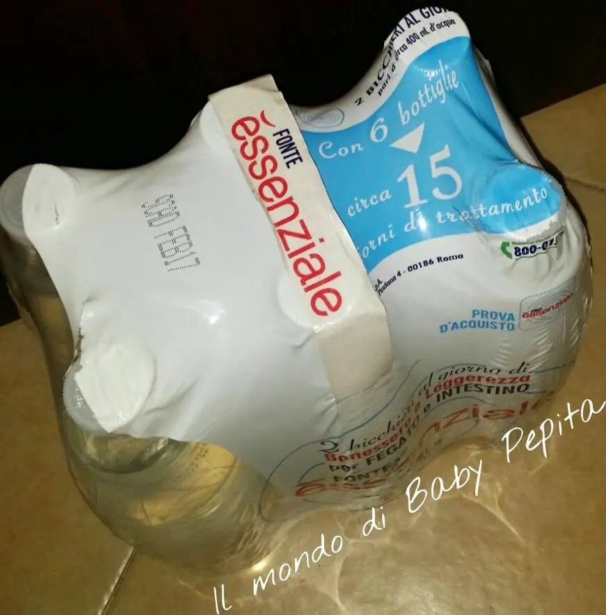
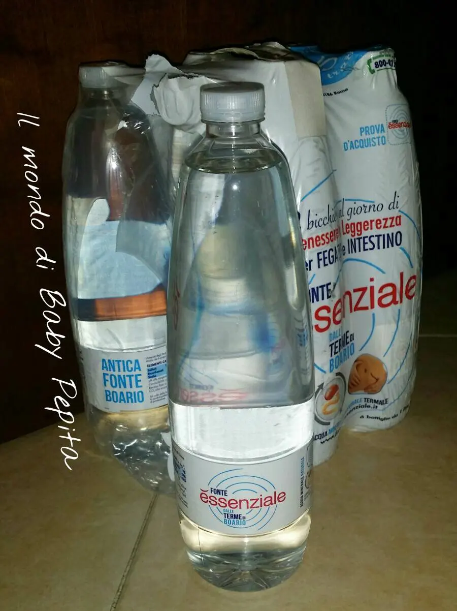
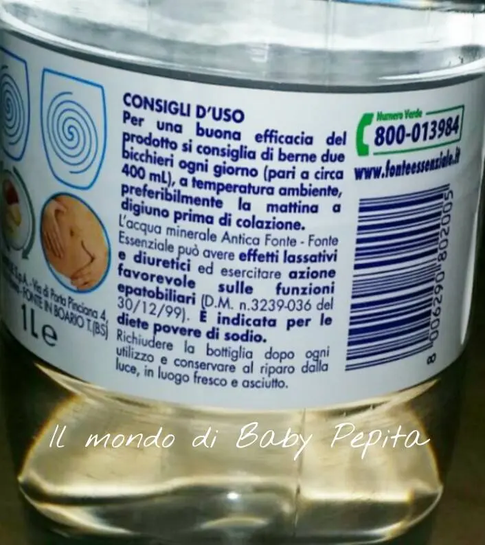
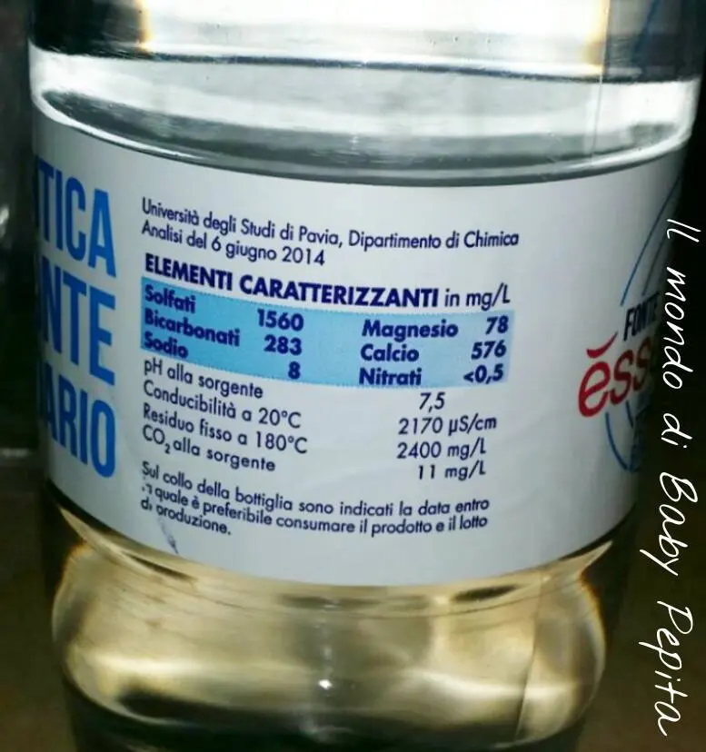
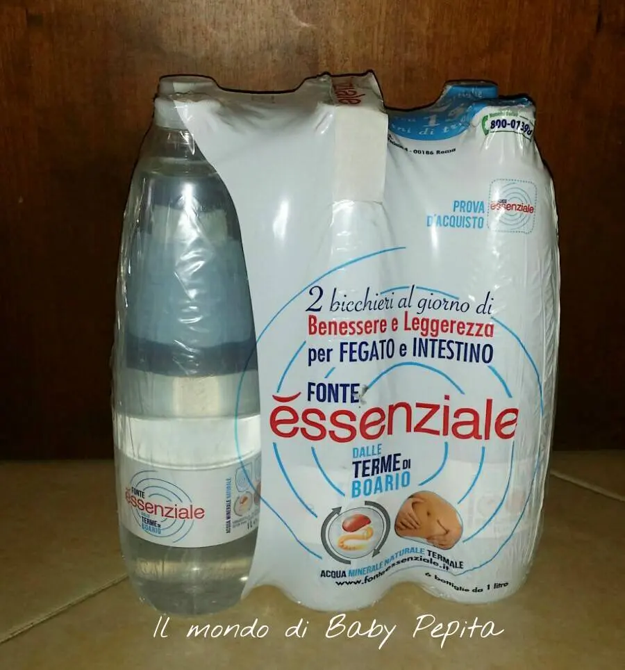

Fonte Essenziale
Oggi parliamo di salute.Ebbene sì, sappiamo che bere acqua rientra nelle principali funzioni essenziali della vita per essere in buona salute e avere un corretto funzionamento del nostro organismo.Ormai ogni medico, dietologo, nutrizionista ci dice che bisogna bere acqua sin dalla colazione.

La quantità che dovremmo bere in media è minimo 2 litri d'acqua al giorno, ciò sarà necessario per favorire l'alimentazione, favorisce lo sviluppo muscolare, ha effetti estetici, in quanto l'acqua forme e rigidità ai tessuti, favorisce un'adeguata lubrificazione delle articolazioni.Beh, quindi senza dubbio l'acqua è un elemento fondamentale per il nostro corpo.
Perchè vi parlo dell'acqua Essenziale?L'acqua Essenziale è un'acqua minerale naturale distribuita dalla Ferrarelle SpA, l'essenziale scaturisce dalle Terme di Boario, in Valle Camonica, ai piedi del Monte Altissimo.
Ricca di solfato e Magnesio, con il 77% di Calcio, principi indicati principalmente per le diete povere di Sodio. .E' stata approvata dal Ministero della Salute, con il quale si attesta che può avere effetti lassativi e diuretici ed esercitare azione favorevole sulle funzioni epatobiliari.
In pratica prendere la buona abitudine di bere due bei bicchieri di Fonte Essenziale (equivalenti all’incirca a 400 mL d’acqua) ogni mattina a digiuno prima della colazione, aiuterà il fegato a stimolare le vie biliari e l’intestino, favorendo i processi fisiologici ed una corretta evacuazione intestinale.
La mia esperienza:Io l'ho fatto per 15 giorni in diversi periodi e devo dire la mia esperienza, è davvero un'ottima acqua, aiuta davvero a stimolare le funzioni del corpo facendomi sentire più leggera.Indicata per chi ha disturbi legati alla digestione, stitichezza, senso di gonfiore o di pesantezza, intestino irritabile, presenza di diverticoli e disturbi della colecisti.
Potete trovare quest'acqua sia al supermercato che in farmacia.
Sito per ulteriori informazioni:http://www.fonteessenziale.it/